LogJammer
Overview
LogJammer is a Blue Team Sherlock focused on Windows event log analysis. The investigation follows a
suspicious user, CyberJunkie, through successful logon activity, firewall tampering, audit
policy modification, scheduled task creation, Microsoft Defender detections, PowerShell execution, and log
clearing. The goal is to reconstruct the activity from EVTX evidence and identify the key artifacts left by
the user.
Evidence and Tools
The provided Windows event logs were parsed with Eric Zimmerman's EvtxECmd and reviewed in Timeline Explorer.
C:\Users\moree39\Desktop\Tools\Get-ZimmermanTools-master\net9\EvtxeCmd\EvtxECmd.exe -d "C:\Users\moree39\Downloads\Event-Logs" --csv "C:\Users\moree39\Downloads\EventLogs-CSV"The parser generated a CSV file that could be filtered by Event ID, timestamp, and payload fields.
C:\Users\moree39\Downloads\EventLogs-CSV\20260519174821_EvtxECmd_Output.csv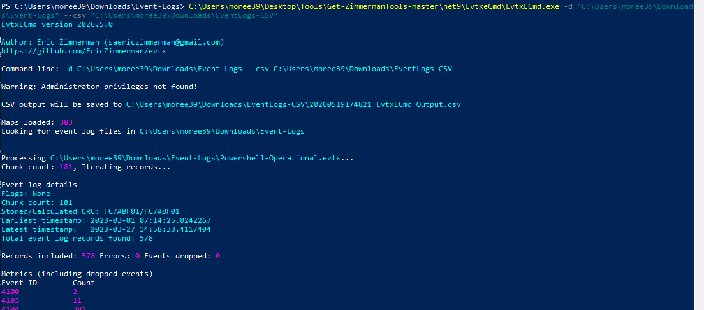
Task 1 - First Successful Logon
Question: When did the cyberjunkie user first successfully log into his computer? (UTC)
Successful user logons are recorded in the Security log with Event ID 4624. I filtered the parsed
CSV for successful logon events where the payload referenced cyberjunkie, then sorted by the
Time Created column.
Event Id = 4624
Payload Data1 contains cyberjunkie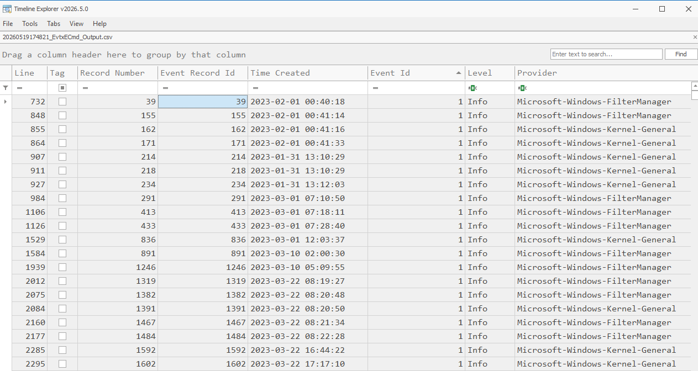
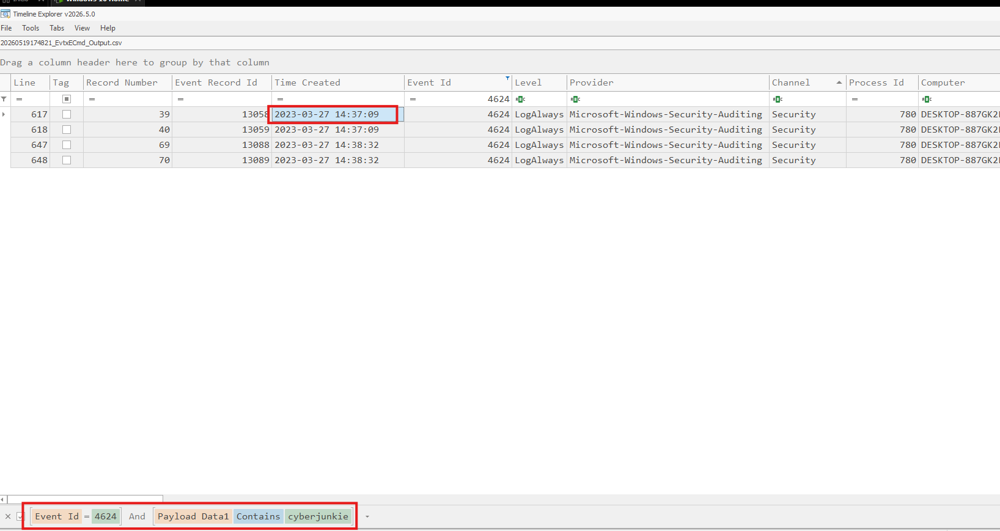
Answer:
27/03/2023 14:37:09Task 2 - Added Firewall Rule
Question: The user tampered with firewall settings on the system. What is the name of the firewall rule added?
Windows Defender Firewall rule additions are recorded with Event ID 2004. I filtered for that event
and reviewed the payload fields around the timeline after the first successful logon.
Event Id = 2004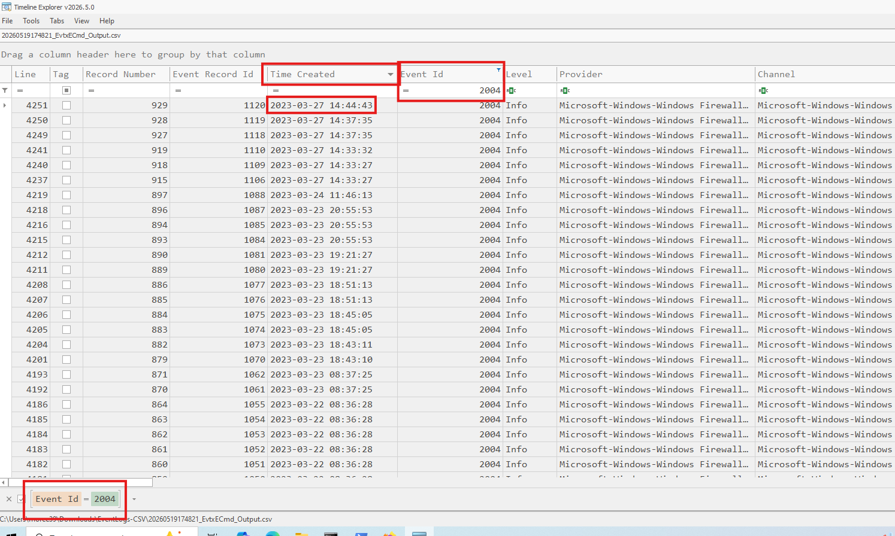
Among normal application rules, one rule clearly stood out as suspicious.
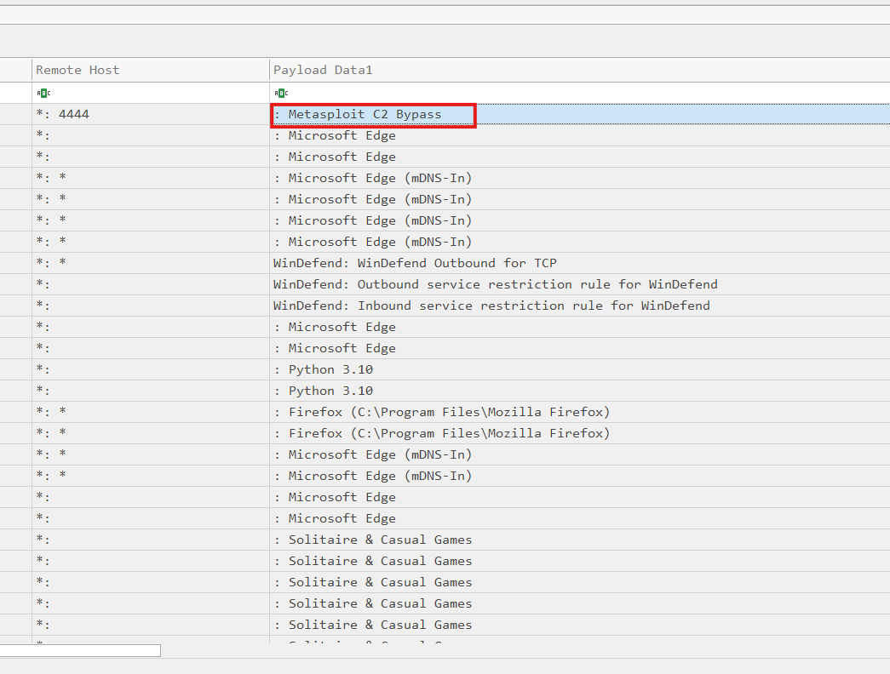
Metasploit C2 Bypass.Answer:
Metasploit C2 BypassTask 3 - Firewall Rule Direction
Question: What is the direction of the firewall rule?
I reused the same firewall event from Task 2 and inspected the full payload. The event showed
Direction: 2, Action: Allow, Protocol: TCP, and remote port
4444.
Direction 1 = Inbound
Direction 2 = Outbound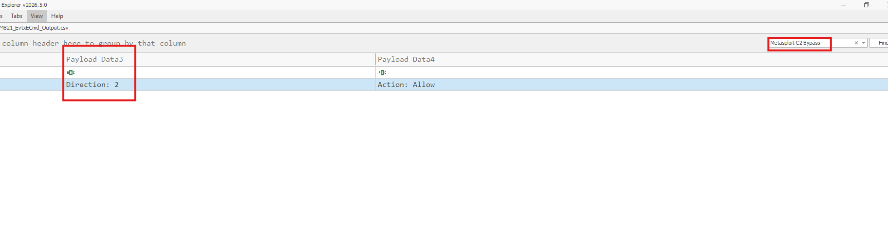
Direction: 2 maps to an outbound firewall rule.Answer:
OutboundTask 4 - Audit Policy Subcategory
Question: The user changed audit policy of the computer. What is the subcategory of this changed policy?
Audit policy changes are recorded in the Security log with Event ID 4719. I filtered for that event
and reviewed the policy change details.
Event Id = 4719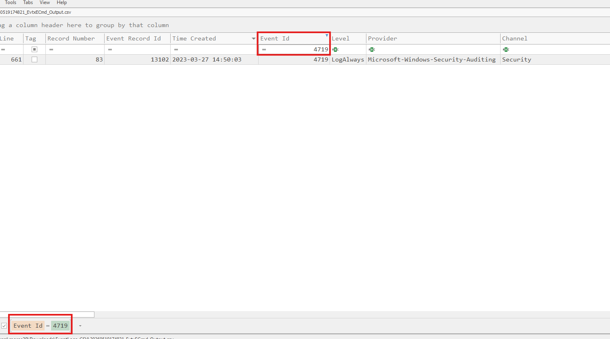
The payload contained a subcategory GUID mapped to Other Object Access Events.
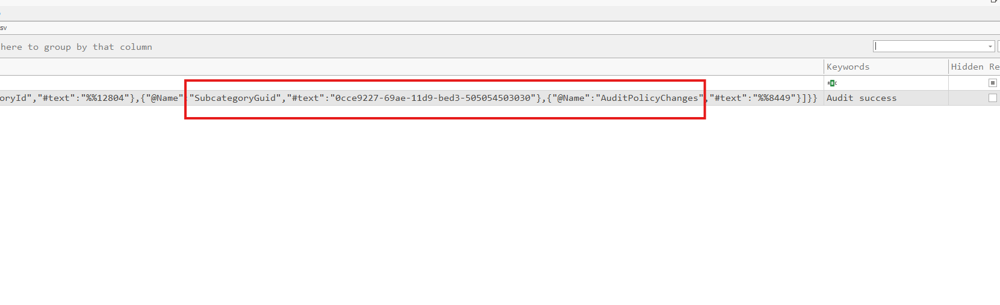
Answer:
Other Object Access EventsTask 5 - Scheduled Task Name
Question: The user cyberjunkie created a scheduled task. What is the name of this task?
Scheduled task creation is recorded with Event ID 4698. I filtered for this event and inspected the
task payload.
Event Id = 4698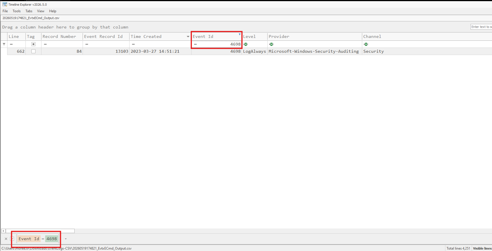
\HTB-AUTOMATION.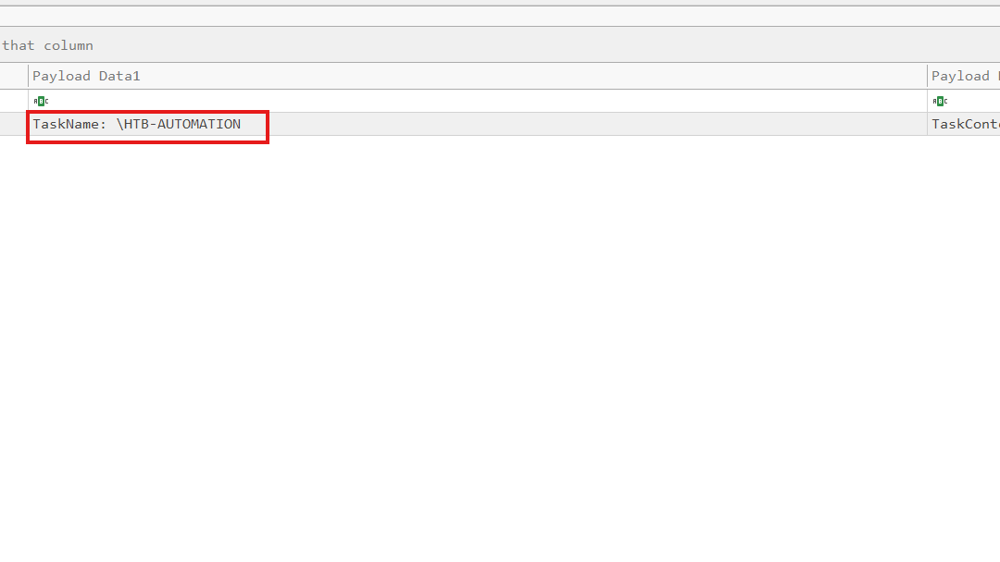
Answer:
HTB-AUTOMATIONTask 6 - Scheduled Task File Path
Question: What is the full path of the file which was scheduled for the task?
I reused the same Event ID 4698 event and inspected the task XML. Inside the <Actions>
section, the <Exec> action showed the PowerShell script configured for execution.
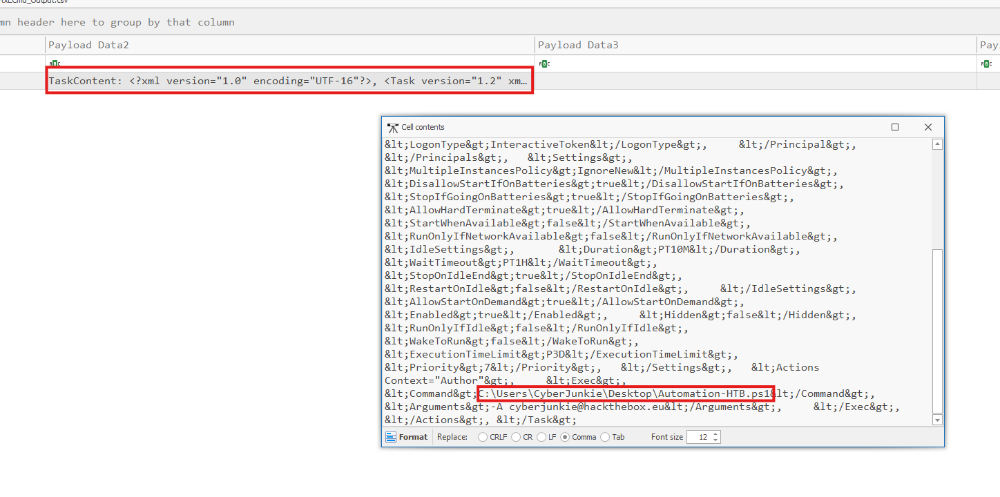
Answer:
C:\Users\CyberJunkie\Desktop\Automation-HTB.ps1Task 7 - Scheduled Task Arguments
Question: What are the arguments of the command?
The same scheduled task XML also contained the command arguments directly below the command path. The task
passed an email-like value to the script using the -A argument.
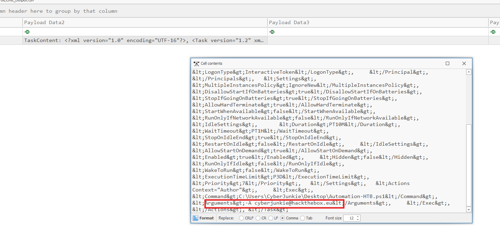
Answer:
-A cyberjunkie@hackthebox.euTask 8 - Tool Detected as Malware
Question: The antivirus running on the system identified a threat and performed actions on it. Which tool was identified as malware by antivirus?
Microsoft Defender actions are recorded with Event ID 1117. I filtered for Defender events and
reviewed the detected threat name around the incident timeline.
Event Id = 1117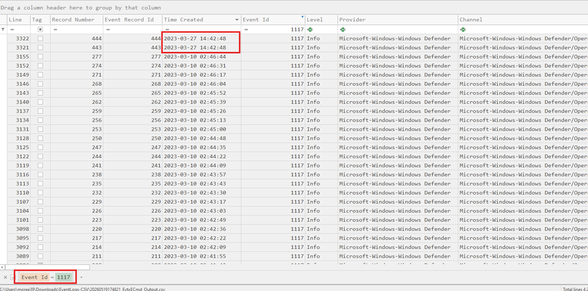
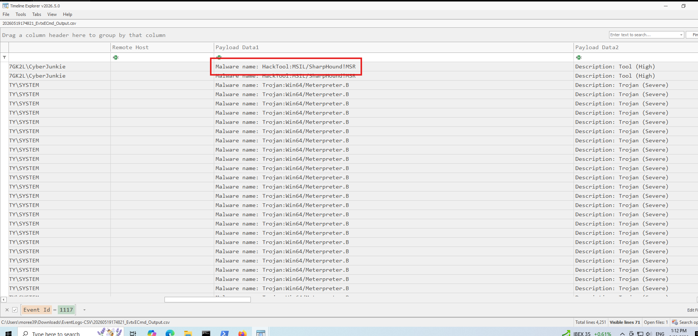
HackTool:MSIL/SharpHound!MSR.Answer:
SharpHoundTask 9 - Malware File Path
Question: What is the full path of the malware which raised the alert?
I reused the Defender Event ID 1117 detection and inspected the payload path field. The detection
was tied to the CyberJunkie user and a downloaded SharpHound ZIP file.
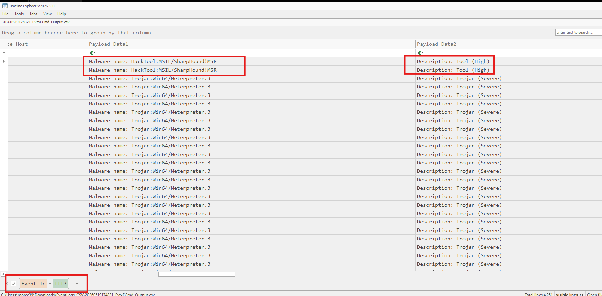
CyberJunkie user context.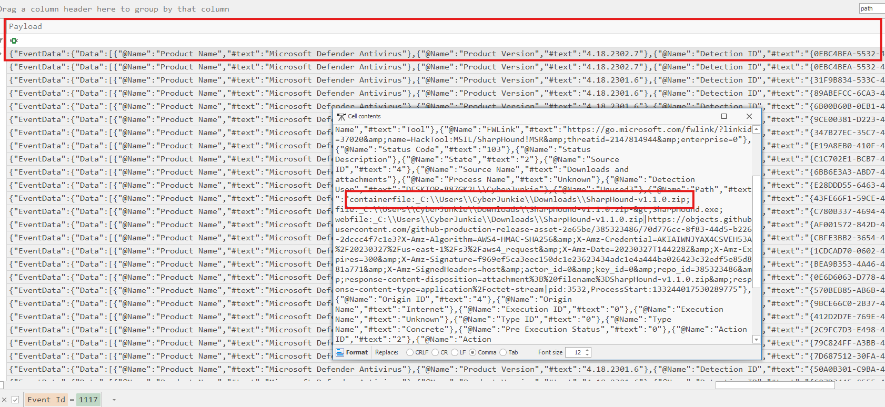
Answer:
C:\Users\CyberJunkie\Downloads\SharpHound-v1.1.0.zipTask 10 - Antivirus Action Taken
Question: What action did Microsoft Defender take against the detected threat?
The same Defender event showed the platform response. In the payload, the Action Name field showed
that the detected SharpHound archive was quarantined.
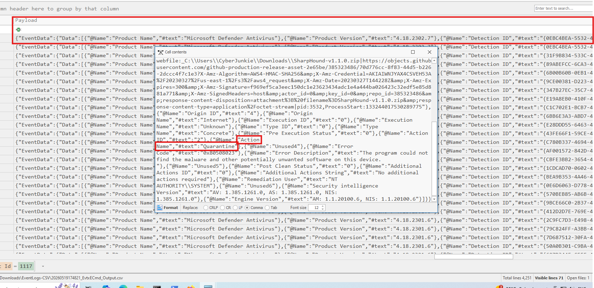
Answer:
QuarantineTask 11 - PowerShell Command Executed
Question: The user used PowerShell to execute commands. What command was executed by the user?
PowerShell script block logging records command content with Event ID 4104. I filtered around the
incident timeline and found a suspicious script block at 2023-03-27 14:58:33 UTC.
Event Id = 4104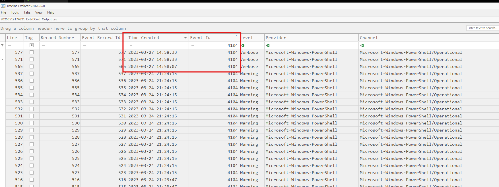
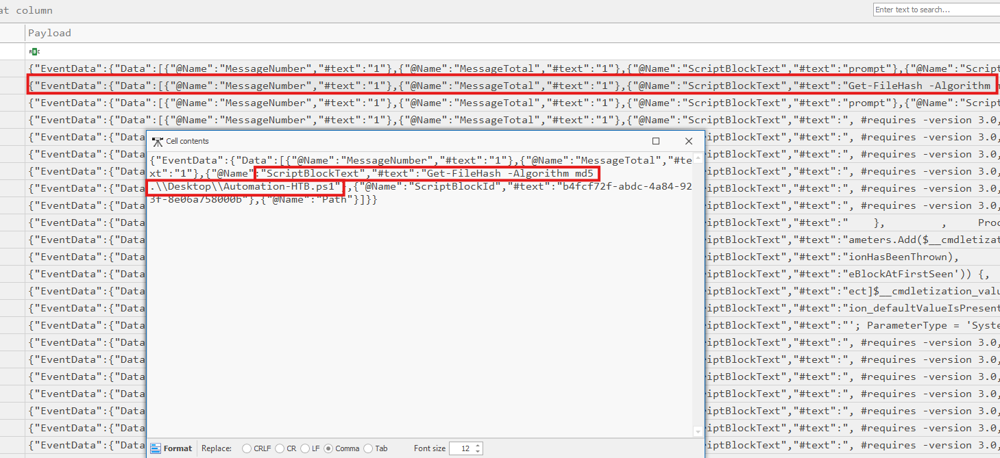
Answer:
Get-FileHash -Algorithm md5 .\Desktop\Automation-HTB.ps1Task 12 - Cleared Event Log
Question: We suspect the user deleted some event logs. Which event log file was cleared?
Event log clearing is recorded with Event ID 104. I filtered for this event and focused on activity
around the end of the timeline.
Event Id = 104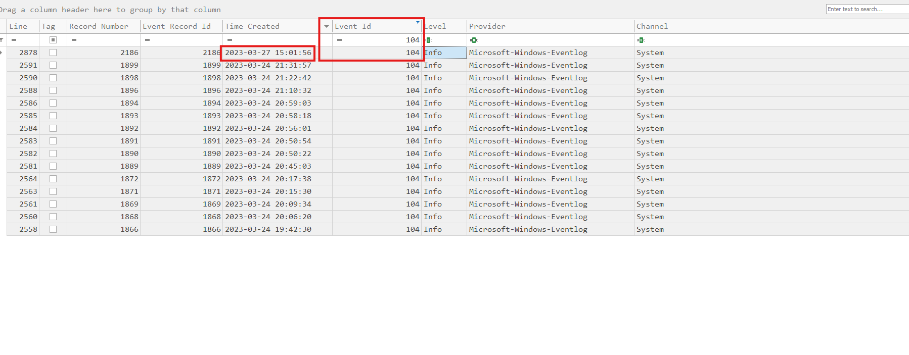
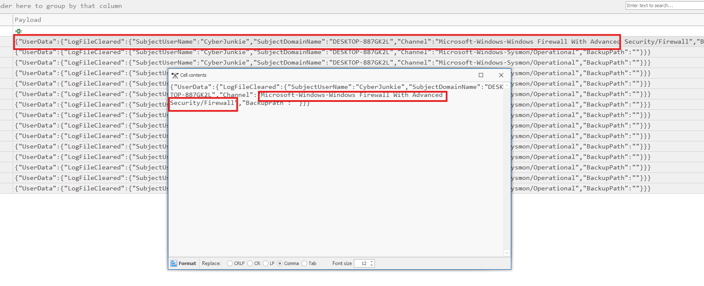
Answer:
Microsoft-Windows-Windows Firewall With Advanced Security/FirewallIncident Timeline
| Time UTC | Source / Event ID | Activity | Key Evidence |
|---|---|---|---|
| 2023-03-27 14:36:45 | Security / 1102 | Security audit log cleared | DESKTOP-887GK2L\CyberJunkie |
| 2023-03-27 14:37:09 | Security / 4624 | First successful logon | cyberjunkie |
| 2023-03-27 14:42:48 | Defender / 1117 | Threat detected and action taken | HackTool:MSIL/SharpHound!MSR, Quarantine |
| 2023-03-27 14:44:43 | Firewall / 2004 | Suspicious firewall rule added | Metasploit C2 Bypass, Outbound |
| 2023-03-27 14:50:03 | Security / 4719 | Audit policy changed | Other Object Access Events |
| 2023-03-27 14:51:21 | Security / 4698 | Scheduled task created | HTB-AUTOMATION |
| 2023-03-27 14:58:33 | PowerShell / 4104 | PowerShell command executed | Get-FileHash -Algorithm md5 .\Desktop\Automation-HTB.ps1 |
| 2023-03-27 15:01:56 | System / 104 | Firewall event log cleared | Microsoft-Windows-Windows Firewall With Advanced Security/Firewall |
Attack Story
The activity suggests that CyberJunkie performed several suspicious actions after logging in.
Microsoft Defender detected SharpHound, a tool commonly used to collect Active Directory data for
BloodHound. Shortly after, the user added an outbound firewall rule named Metasploit C2 Bypass,
which allowed TCP traffic toward port 4444. The user then modified audit policy settings and
created a scheduled task named HTB-AUTOMATION to execute a PowerShell script from the desktop.
Later, PowerShell logging showed that the user calculated the MD5 hash of the automation script. Finally, the Windows Firewall event log was cleared, likely to hide evidence of the firewall modification.
Key Takeaways
- Windows Event IDs provide a strong timeline for user activity and system changes.
- Firewall rule additions can reveal C2 preparation or reverse shell support.
- Scheduled task events expose persistence-related artifacts such as task names, commands, and arguments.
- Defender events can identify offensive tooling and the response action taken.
- Log clearing events are important because they often indicate defense evasion or cleanup activity.